QuickBuild lets you interactively build powerful, robust, ready-to-deploy vision applications quickly. This tutorial will take you from the first step of setting up your vision tools to building an executable vision application.
What You'll Be Doing
Building a vision application with VisionPro is a three step process:
- Use QuickBuild to develop and refine your vision application.
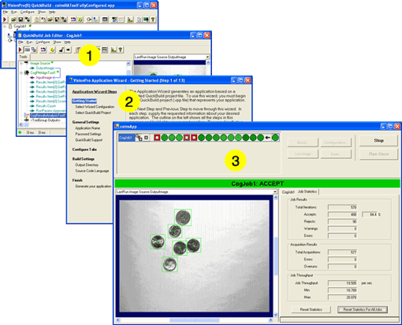
- Use the Application Wizard to create a user interface for your users and to generate the executable application.
- Test and deploy the executable application.
The application you'll be building in this tutorial counts coins in an image and determines whether the image contains a minimum number of coins. It uses the PMAlign tool to identify coins in an image and various other tools to report results.
Starting QuickBuild
VisionPro installs the QuickBuild icon on your Windows desktop
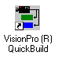
To launch QuickBuild, double-click the icon or choose Start->Cognex->VisionPro->VisionPro QuickBuild from the Windows Start menu. The initial QuickBuild window appears:
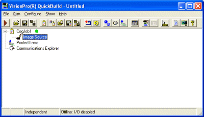
And now you're ready to begin.
Establish an Image Source
The first thing to do in developing a vision application is to establish an image source. Typically, the image source is a camera connected to a Cognex frame grabber or a FireWire camera connected to an IEEE-DCAM adapter. When you're developing an application, however, it's convenient to use an image database. Ideally, the image database should contain a range of the kinds of images you're likely to encounter in your application.
Although in this example we use an image database, for most applications you will want to acquire images from a camera. We recommend you make a complete pass through QuickBuild -> Application Wizard -> Test, and completely debug your application. When you are ready to deploy, rerun QuickBuild and change to camera acquisition instead of using an image database, then run the Application Wizard again and prepare a deployment executable.
The following section describes how to setup a camera for acquisition in a deployed application. The section after that, Opening an Image Database, continues on with this tutorial and shows you how to use an image database for application development.
Camera Acquisition
To acquire images from a camera, do the following:
- Double-click the Image Source item in the QuickBuild window.
- In the Image Source dialog, select Acquire from camera. You will see the following dialog.
- The Frame Grabbers pull down menu will list the frame grabbers on your system. Choose the frame grabber you wish to use.
- The Video Formats pull down menu will then list the camera video formats available for the cameras supported by the selected frame grabber. Choose the video format for the camera you are using.
- In the Camera Port pull down menu, select the port you are using for your camera.
- Click on Initialize Acquisition to prepare your camera to acquire images.
- Click the Live Display button in the dialog.
A live display window opens that provides a real time display of images from your camera .
- Observe the live display and adjust your camera lens, Exposure, Brightness, and Contrast for an optimum image.
- Click on the Strobe and Trigger tab to display the following dialog.
- Use this dialog to setup the strobe and trigger for your application. See Strobe and Trigger Tab for a detailed description of strobes and triggers.
- Click on Image Properties to display the following tab.
- The Region dialog allows you to choose a region of interest (ROI) in the acquired image. The settings shown include the entire 640x480 pixel image with the ROI origin in the upper-left hand corner. Change the ROI if you wish.
- The Output Pixel Format pull down menu allows you to choose an image format. This is the format of the image that will be returned to you from the acquisition system. This may, or may not, be the format the camera outputs. If the camera outputs a pixel format different from what you choose here, the acquisition system performs a conversion for you. For best performance, the Output Pixel Format should match the camera output so that no conversion is required.
- If your color camera supports a color Lookup Table this tab will appear in your dialog. Consult your camera User's Manual for information on using this camera feature.
QuickBuild opens a QuickBuild Job Editor dialog and then an Image Source dialog.
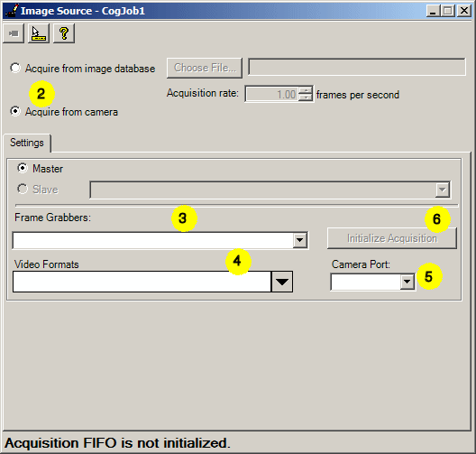
When your camera and frame grabber are initialized, you will see that the Image Source window now includes new tabs: Strobe and Trigger, Image Properties, and Lookup Table.
Note that the Lookup Table tab is displayed only if your camera supports a lookup table.
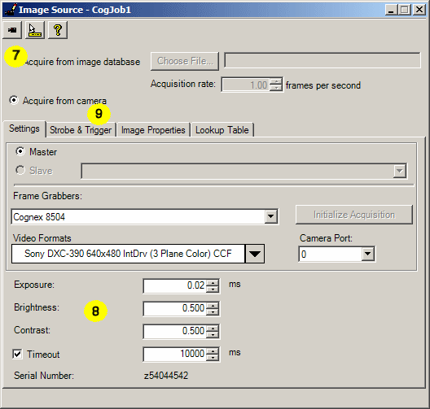
Turn off Live Display to complete this setup procedure.
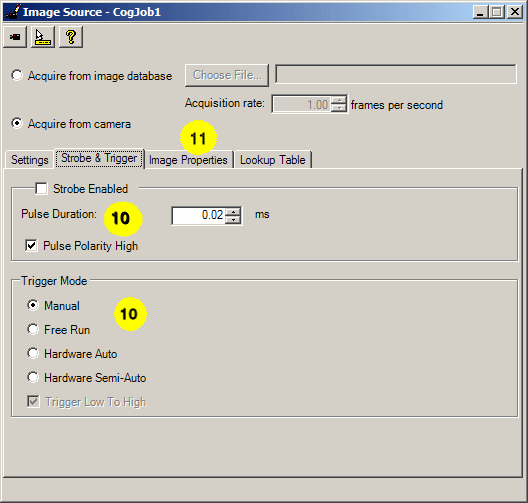
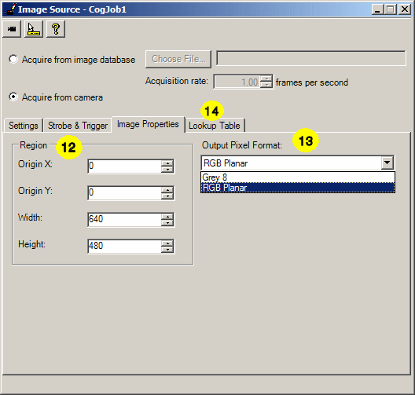
RGB Planer is the standard color format for VisionPro color vision tools. Grey 8 selects a true grey scale image format which is used by most vision tools. A third choice, Raw, (not shown here) is available if your camera produces a Bayer color format. If you choose to work with the Bayer format you will have to convert it to RGB Planer or Grey 8 format if you want to use it with vision tools. You can use the CogImageConvert tool to make this conversion.
White Balance
Some FireWire cameras offer White Balance adjustment. If the camera associated with the Frame Grabber and Video Format you have specified supports white balance adjustment, white balance dialog will appear in the lower right-hand corner of the Settings tab as shown below.

Set the Red Gain and Blue Gain values to manually adjust the white balance. If your camera supports automatic white balance, the Auto White Balance button will also appear in your dialog. Consult your camera User's Manual for information on how to adjust the white balance for your camera.
Opening an Image Database
For this example, you'll use a small database of coin images installed, by default, in \Program Files\Cognex\VisionPro\Images\coins.idb.
- Double-click the Image Source item in the QuickBuild window.
- When the Image Source dialog opens, select Acquire from image database.
- Click Choose File to select an image database file.
For this tutorial, use the file coins.idb located in \Program Files\Cognex\VisionPro\Images.
- Click the Live Display button in the dialog.
A live display window opens that cycles through each of the images in the database.
- When you've seen enough, close the live display window and the Image Source dialog.
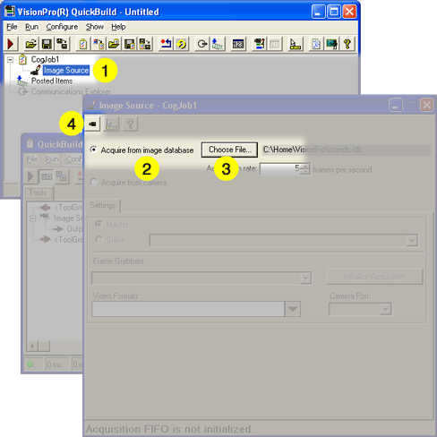
QuickBuild opens a QuickBuild Job Editor dialog and then an Image Source dialog.
Running the Job
At this point your job has only the image source in it. (The Image Source is a special kind of tool that is only available within QuickBuild.) You can run the job to see how an image appears in the tool group window.
- Click the Run button in the tool group's tool bar.
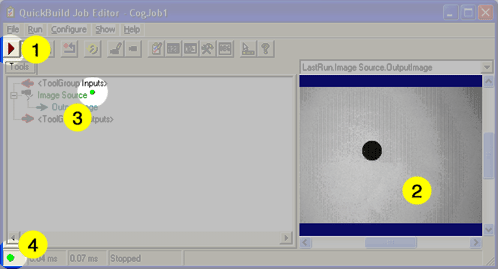
- The image acquired from the image database file appears in the display area.
- When you run a tool, a small green dot next to the tool indicates that it ran successfully.
- When all the tools in a job ran successfully, a green dot appears in the lower left corner of the Job Editor.
- Click the Run button until you see an image of the large black circle.
In the next step, you'll add a PMAlign tool and configure it to find the coins in each image.
Setting Up Your PMAlignTool
This example uses the CogPMAlign tool to look for round shapes (coins) in the image. The PMAlign tool uses Cognex PatMax software to locate patterns in an image. It's very fast, accurate, and flexible.
You can learn more about PatMax and the PMAlign tool by reading the PatMax Software theory guide the PMAlign Edit Control reference.
Adding the PatMax Align Tool to the Job
The first thing to do is add a CogPMAlign tool to your QuickBuild project.
- Click the toolbox button to open the toolbox.
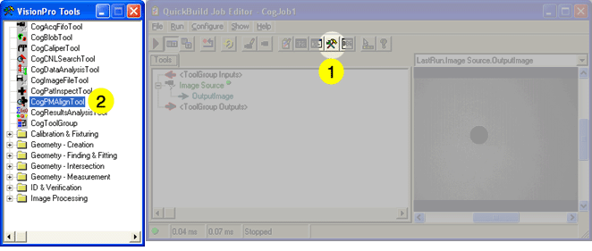
- When the Toolbox appears, select the CogPMAlignTool and drag it to the Job Editor.
- A new CogPMAlign tool appears under the Image Source.
- Click on the OutputImage of the Image Source and drag to the InputImage of the tool to link the acquired image with the tool.
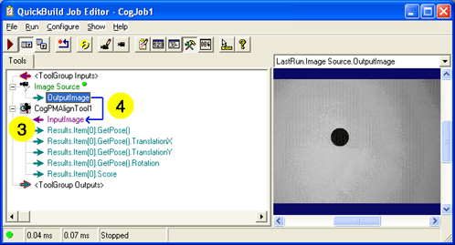
This tells the PMAlign tool to use the image source for its input image.
Creating the Pattern
The PMAlign tool can make a pattern several ways. This example uses the a round dot the size of a coin as a pattern. If you used the actual image of a coin, the tool would try to match those features as well. This example uses the PatQuick algorithm, a PMAlign tool option that improves the search speed of the tool at the cost of some accuracy. In this application, the search for coins doesn't require very high accuracy.
Double click on CogPMAlignTool1 to open the tool.
-
Choose PatQuick from the Algorithm drop-down menu.
This tells the tools to use the faster PatQuick algorithm which is appropriate for this example.
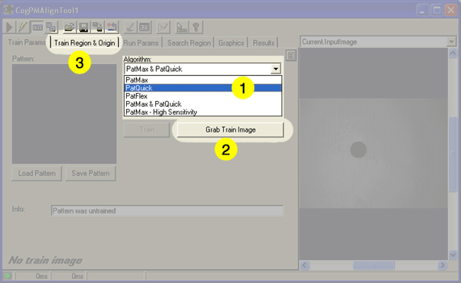
- Click Grab Train Image to have to tool use the current input image as the training image.
- Click the Train Region & Origin tab to set up the training parameters.
- When the tab changes, choose Current.TrainImage from the display menu to display
the training image you grabbed.
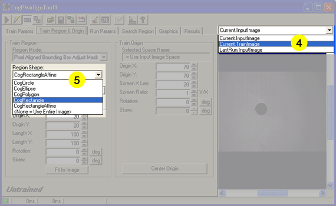
- Choose CogRectangle from the Region Shape drop-down menu. This tells the tool that you will be selecting a simple rectangular area to train.
- Click and drag the small training region rectangle to enclose the large dot to tell the tool what
part of the image to use as a pattern.
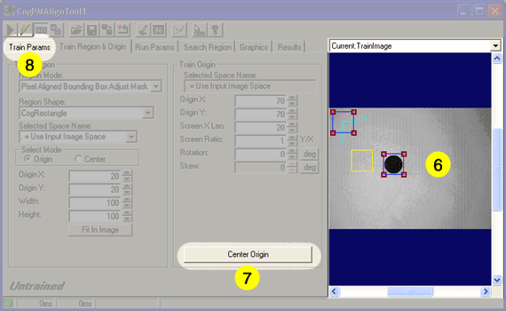
- Click the Center Origin button to move the origin icon to the center of the rectangle. When the tool finds a feature in an image, it uses the relative location of the origin icon to report its location. In most cases, the center of the thing you're looking for is the position you want to report.
- Click on the Train Params tab to finish training the pattern.
- Check the Ignore Polarity option. Polarity tells the tools whether it should
consider or ignore whether the pattern is dark on a light background or light on dark background.
Since this pattern is dark on a light background, and depending on the lighting, the coins may be either light or dark
against the background, ignoring polarity is the right thing to do in this case.
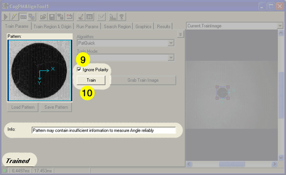
- Click the Train button. The trained pattern appears in the Pattern panel, and the word Trained appears at the bottom of the tool.
You may notice the information message that reads Pattern may contain insufficient information to measure Angle reliably. Since the pattern you're using is circular, it's expected that the PatMax software would not be able to determine if it's rotated.
Trying it Out
Now you're ready to see how your patterns work.
- Choose LastRun.InputImage from the image drop-down list. The last run image
shows the results of the most recent run. Since you haven't run the tool yet, this image may be blank.
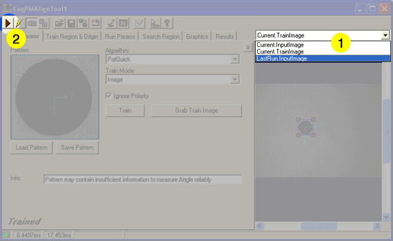
- Click the Run button to run the tool.
- Since you used the current image as the training pattern, the tool should have no problem finding it.
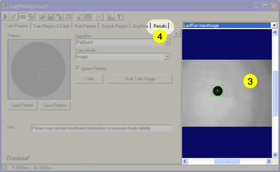
- Click the Results tab to see the results that tool produced.
- The Results pane lists all of the features that were found in the image. You can examine
the score, location, and other results for each feature.
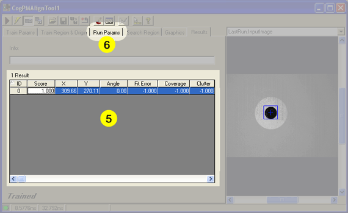
When you select a row in the Results pane, the corresponding shape is highlighted in blue in the display pane.
You can use this pattern to find any round shape in an image. But since you want to find several coins of different sizes, you need to set up the tool to be more flexible with the pattern.
- Click the Run Params tab to adjust the tool's run parameters to change the way it deals with objects of different sizes.
Adjusting the Run Parameters
Creating and training the pattern tells the PMAlign tool what to look for. The run parameters tell the tool how to go about finding it.
- Set the Approx. number to find to 10. This number is a guide for the tool, not a threshold.
The tool may find more than this number of instances.
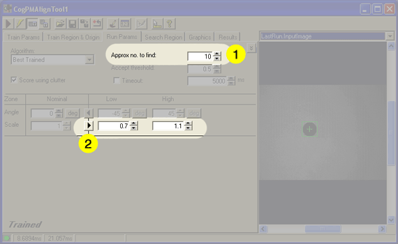
- Click the scale arrow to point to the right, and set the Low threshold to 0.7 and the High threshold to 1.1.
This setting lets you select the relative sizes of the things you are looking for. In this example, you trained your pattern with the largest coin you expect. The smallest coin in this set is the US dime; its diameter is about 70% that of the largest coin, the US quarter.
The scale factor is also used to take into consideration slight differences in size and distance from the camera.
Everything should be set up now to find coins:
- You selected an image to use as a pattern.
- You trained the pattern.
- You set up the run parameters to find the items you're looking for.
Running the Entire Job
You're ready to run the entire job. Close the CogPMAlign tool window, or drag it out of the way, so you can see the QuickBuild job editor.
- Click the Run Job Once button.
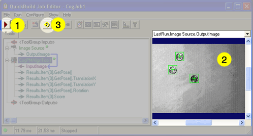
- QuickBuild runs the entire job:
- It acquires the next image, either from the image database or the camera.
- It runs the CogPMAlignTool to find the items in the image.
- It displays the results in the display pane.
- You can click Run Job Continuously to have QuickBuild acquire images and run the tool until you click the button again.
At this point in developing your vision application, you would experiment with the kinds of images you're likely to process, and adjust the tool parameters, camera alignment, and lighting. If you need to do that for this application, double-click on the CogPMAlignTool1 entry in the QuickBuild job editor.
Analyzing Results
At this point, your application does what it is designed to do: find coins in an image. Now it's time to make it more interesting. Most vision applications involve checking an image to see if it meets some criteria. In this application, you will check whether the image contains a minimum number of coins.
Every VisionPro tool has a result status that it displays at the lower left corner of the tool edit control. In the QuickBuild Job Editor, you can see each tool's status as a small icon to the right of the tool's name. The results status of the entire job depends on all of the tools in it passing.
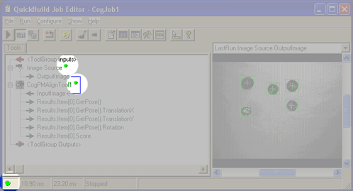
Ideally, the PMAlign tool would pass when it finds the number of coins you want, and fail if there were fewer. But since you can use the PMAlign tool for much more than counting, it's better if you decide what information that the tool generates is relevant to your application.
To do this, you'll expose some additional results that the PMAlign tool generates, and you'll use a new tool, the Results Analysis tool to compute an inspection status for the entire job.
Exposing New Terminals to the PMAlign Tool
By default, the PMAlign tool exposes the score and pose information for the first item found. (Pose information contains information about the position and size of the found pattern.) The data you want to expose are the number of coins you expected to find and the actual number to find. To do this, you need to add terminals to the PMAlign tool.
-
Right-click on the CogPMAlign tool in the QuickBuild Job Editor window.
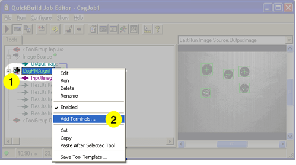
- Choose Add Terminals from the pop-up menu.
-
The Member Browser dialog opens.
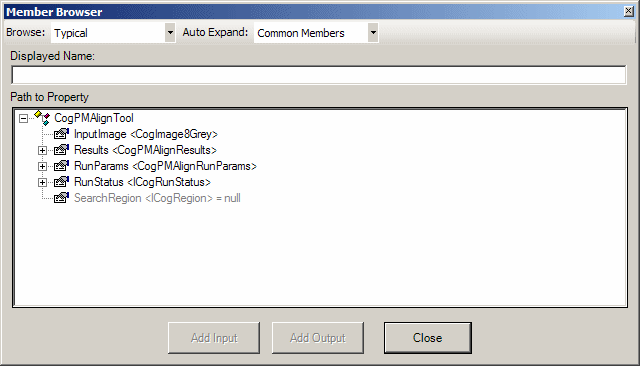
The member browser exposes the underlying structure of the tool, which can be fairly complex. To reduce this complexity the browser provides three structure levels; Typical, Expanded and All which you can choose from the pull down menu. Typical, the default, displays only the most often used elements. Expanded displays a somewhat longer list and All displays the entire structure.
The Auto Expand pull down menu gives you the option to automatically expand commonly used property collections. When you choose Common Members, the default, common members are expanded automatically when they are displayed. If you choose None, no property collections are expanded automatically. We will use None in this example to minimize the screen clutter.
The following table shows the most commonly used property collections displayed by the browser. These property collections are implemented as classes in .NET, and most of the time they correspond to the tabs in the tool edit control.
The next set of steps take you through the process of exposing the two pieces of data you want: the number of coins you expected to find and the number of coins the tool found.
- Click the Results entry to expand it.
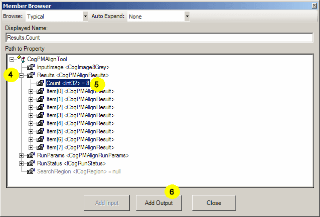
- Choose the Count entry.
- Click the Add Output button. This makes the Results property an output terminal of the PMAlign tool. The dialog doesn't close so you can add more terminals.
- Click the RunParams entry to expand it. Scroll down to find the ApproximateNumberToFind entry and click it.
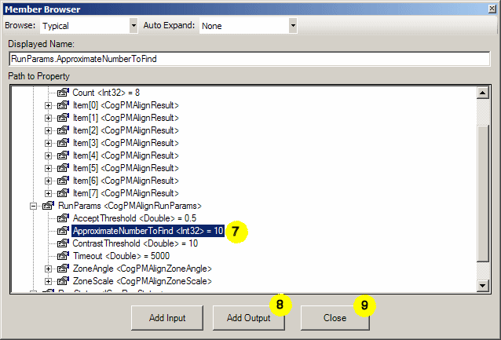
- Click the Add Output button to make the ApproximateNumberToFind property an output terminal. You'll notice that the Add Input button is enabled in this case. That means that you can use this terminal as an input terminal as well.
- Click the Close button.
- The new terminals appear in the QuickBuild Job Editor.
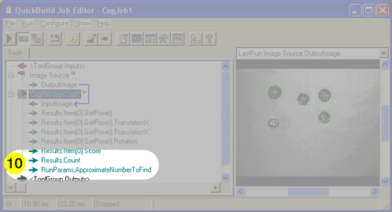
The next task is to set up a Results Analysis tool to accept the values of the two new output terminals you just added.
Adding a Results Analysis Tool to the Job
- If it's not already open, click the Floating Toolbox button to open the toolbox.
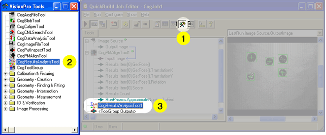
- Select the CogResultsAnalysis Tool from the toolbox.
- Drag it to the QuickBuild Job Editor.
Setting Up the Results Analysis Tool
- Double-click on the CogResultsAnalysisTool1 entry in the QuickBuild Job Editor to open the Results Analysis tool.
- When the tool's edit control dialog opens, click the Add Input button twice.
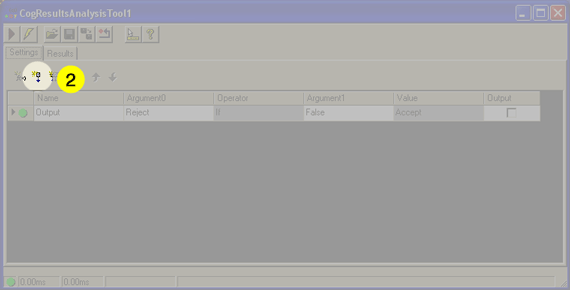
Two new items named InputA and InputB appear in the list.
-
Click on the item names to rename them. Rename them to more meaningful names: NumberFound and Minimum.
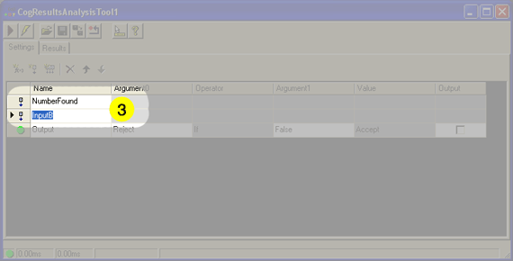
Now you need an expression to compare both values.
-
Click the Add Expression button.
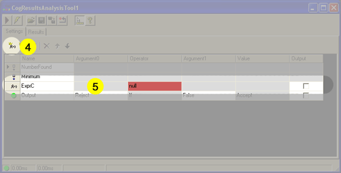
-
A new expression line appears in the list.
The expression you're going to build is one that says "Reject any results where the NumberFound is less than the Minimum."
-
To create this expression, select the relation first. Click the Operator cell in the expression and choose
LessThan.
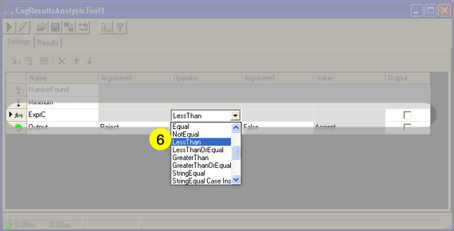
When you do this, the entries in the Argument columns will be red, and the Value column will say ERROR. This is OK because you're not finished making the expression.
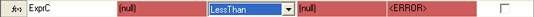
-
Choose NumberFound for the Argument0 cell and Minimum for the Argument1 column.
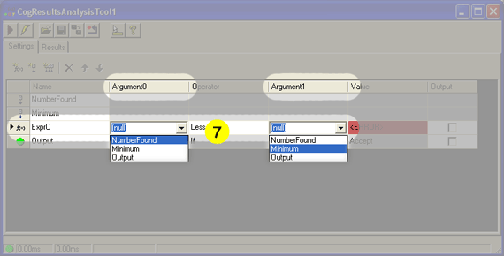
That completes the expression. -
The last step is setting up the rejection criteria. You want to reject the image when the expression you created is True.
Choose ExprC for Argument1 in the Output line.
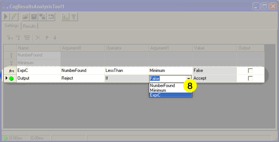
This says that the Results Analysis tool will return a Reject status whenever ExprC is True; in other words when the number of coins found is less than the minimum.
Connecting the New Terminals to the Results Analysis Tool
Now you need to connect the terminals you created for the PMAlign tool to the inputs of the Results Analysis tool.
- Click the + icon to the left of the CogResultsAnalysisTool1 to expose the inputs you defined for the tool.
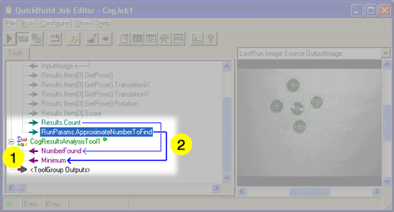
- Click the Results.Count output for the PMAlign tool and drag it to the NumberFound input of the of the Results Analysis tool. Do the same for the Results.ApproximateNumberToFind terminal of the PMAlign tool and the Minimum input of the Results Analysis tool.
Trying It Out
Now you're ready to see how everything works. Arrange the QuickBuild Job Editor window and the CogResultsAnalysisTool1 windows so you can see both at the same time. Note that tool windows always appear in front of the job editor window.
- Click the Run Job Once button to run your vision application.
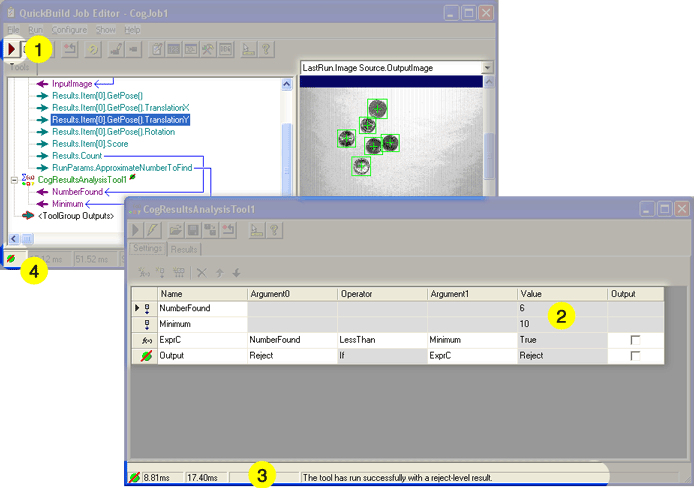
- When the PMAlign tool runs, the number of coins found and the number expected to be found are transferred to the Results Analysis tool.
- Since ExprC was True, the number of coins found was less than the minimum number of coins, the status of the Results Analysis tool is Reject.
- The Reject status propagates to the entire job. A reject-level result means that all the tools in the job ran correctly, but that the criteria for acceptance weren't met. In this case, the PMAlign tool found too few coins.
Making Changes to the Job
Try changing the Approx. no. to find setting in the PMAlign tool to see how that affects running the job.
- Double-click on the CogPMAlignTool1 item in the Job Editor window to open the tool.
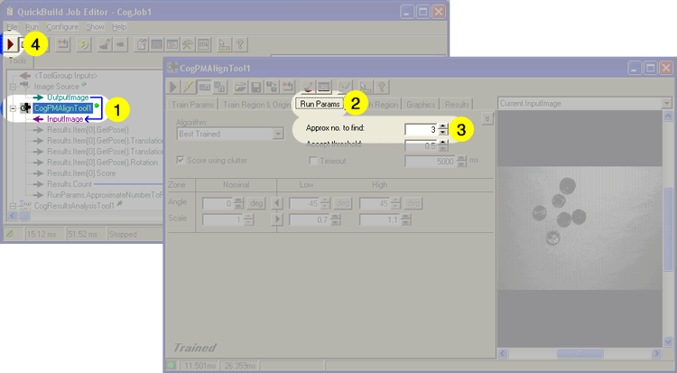
- Click the Run Params tab in the PMAlign edit control.
- Set the Approx. no. to find to 3.
- Click the Run Job Once button in the QuickBuild Job Editor.
- Now you can see the new Minimum value in the Results Analysis tool.
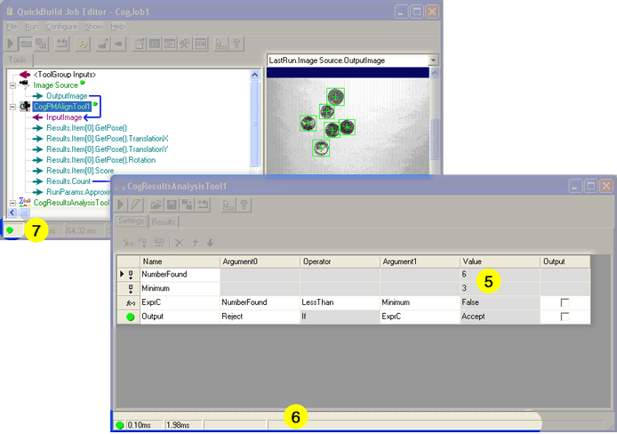
- Since the expression evaluated to False (the number of coins found was not less than the minimum), the Results Analysis tool passes.
- The Passing result propagates to the rest of the job.
The next section shows you how to keep track of the results of your application. Keeping historical results is useful to see how your application is running, and it also makes turning your vision application into deployable software much easier.
Keeping Track of Results
When you're using a vision application, you often want to be able to look at previous results. QuickBuild uses the Posted Items list to hold the results of completed runs of each job. Another list, the Failure Results Queue holds the results of failed requests.
Until now, you've been using the QuickBuild Job Editor which lets you work with a job, a collection of tools. In this section, you'll be working with the main QuickBuild window which contains the entire application. In this case, the application has only one job, but in more complex situations, you would have several jobs as part of the same application.
Configuring the Application to Save Rejection Results
By default, QuickBuild is set up to remember the last 32 job executions and the last 32 job failures. For this application you want the Failure Results Queue to also include those executions where the job ran correctly but the result was a rejection (not enough coins).
- Click the Configure QuickBuild Application Properties button in the QuickBuild window.
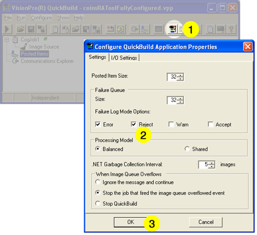
As you can see, the Posted Items list size is already set to 32.
- Check the Reject option in the Failure Queue section. This means that the failure queue will contain results in which the job failed and in which the job returned a reject-level status.
- Click OK.
The next step is to specify which results you want to save in the Posted Items list.
Setting Up the Posted Items List
- Click the Configure Posted Items button in the QuickBuild window.
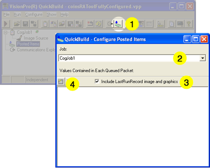
- If your application had more than one job, you would select the job name.
- Make sure that the Include LastRunRecord image and graphics option is selected so that the image and results graphics are saved with the result.
- Click the Add Item button to begin adding items to the Posted Items list. The Configure Posted Items browser opens.
-
Click the + icon next to the Tools entry to expand it.
You'll see the three tools in your job listed by name here: the Image Source tool, the PMAlign tool, and the Results Analysis tool.
- Click the + icon next to the CogResultsAnalysisTool1 entry to expand it.
-
Continue expanding the following items to reach the value of the NumberFound entry of the Results Analysis tool:
CogResultsAnalysisTool / RunParams / Item["NumberFound"] / CogResultsAnalysisExpression / Value / Int32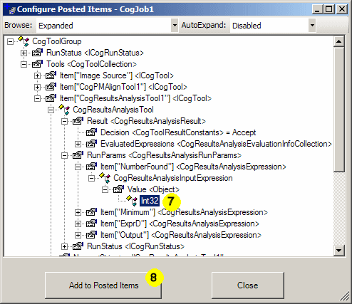
- Click Add to Posted Items to add the NumberFound value to the Posted Items list. The browser stays open so you can add more entries.
-
Expand the following items to reach the value of the Minimum entry of the Results Analysis tool
Item["Minimum"] / CogResultsAnalysisExpression / Value / Int32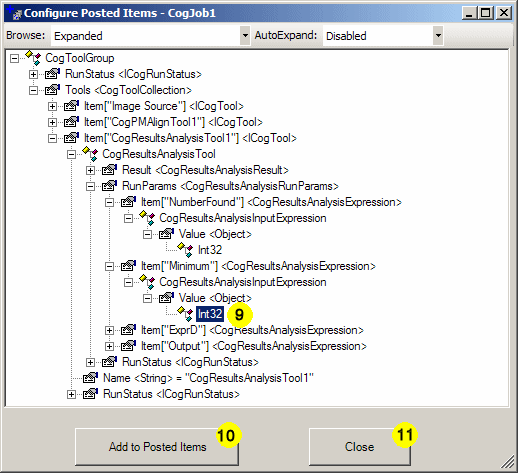
- Click Add to Posted Items to add the Minimum value to the Posted Items list.
- Click Close to close the Configure Posted Items browser. Your Posted Items window will look like this:
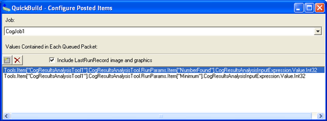
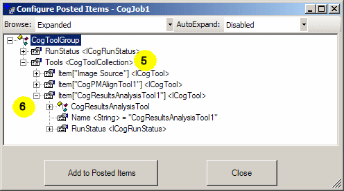
The Configure Posted Items browser exposes the underlying structure of the tool, which can be fairly complex. To reduce this complexity the browser provides three structure levels; Typical, Expanded and All which you can choose from the pull down menu. Typical, the default, displays only the most often used elements. Expanded displays a somewhat longer list and All displays the entire structure. For this example you will need to choose Expanded.
Running the Application and Examining Results
Now that you have the Posted Items list and the Failure Results Queue set up, you can see how they work.
-
In the QuickBuild window, click the Run QuickBuild Application Continuously button.
This starts the application running. You will notice the icon to the right of the job name change from a green dot (for successful images) to a green dot with a red slash (for rejected images).
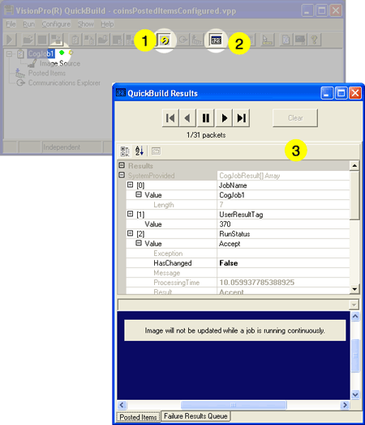
- After a few seconds, click the Show Floating Results button.
- The QuickBuild Results window opens. The data fields will update as the job runs, but the image will not.
- Click the Run QuickBuild Application Continuously button again to stop the application.
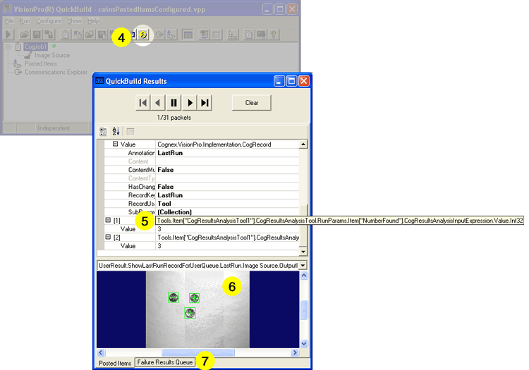
- Scroll to the end of the data fields to see the results you added to the Posted Items list and their values. The names of the items are rather long; if you allow your mouse to hover over the entry, you can see the entire name.
- The display area shows the image results.
-
Very often, however, you're interested only in the images that fail. Recall that you
enabled the option to add reject-level results to the Failure Results Queue. Click
the Failure Results Queue to see the rejected images.
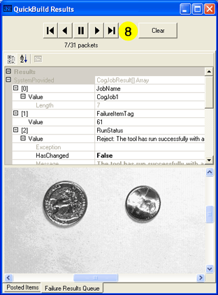
- You can use the buttons at the top of the QuickBuild Results window to examine other saved results.
At this point you have the basic skills you need to develop and refine a vision application with VisionPro and QuickBuild. At this stage of development, you might test different image sets, refine your patterns, tailor the results you want to report, and so on.
As you make changes to your QuickBuild application, it's a good idea to save it.
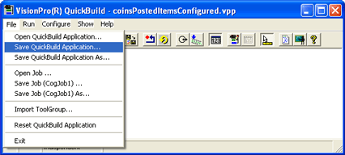
QuickBuild saves applications as QuickBuild Project Files with the extension .VPP.
Once you are ready to deploy your application, you can use your saved QuickBuild application and the VisionPro Application Wizard to create an executable Windows application.
Go on to Creating a Vision Application: Using the Application Wizard to continue the tutorial.